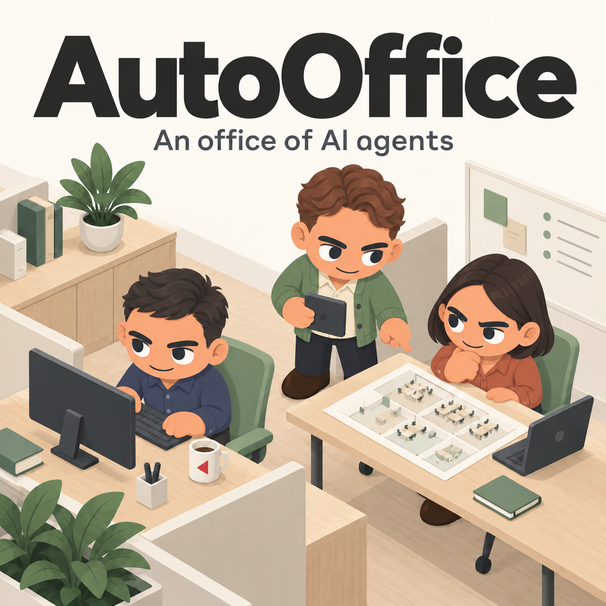

Now open
A fully staffed office, running on your machine.
AutoOffice stands up a whole organization of AI agents locally. Each one has a role, a private memory, and a place in the chain of approval — and everything they decide and produce is recorded in one SQLite database, inside a workspace folder you own.
Opened
Friday 18 September 2026 · 12:01 AM PDT
The office is open
Download both archives and extract them into the same folder, then run AgentOffice.exe.
